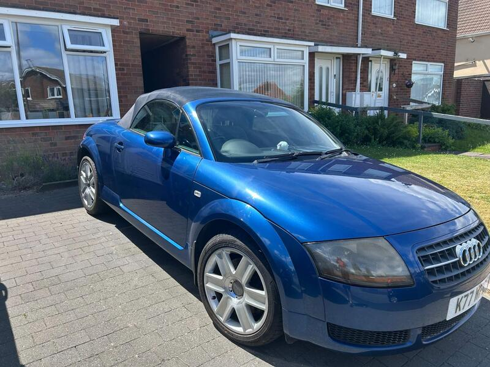
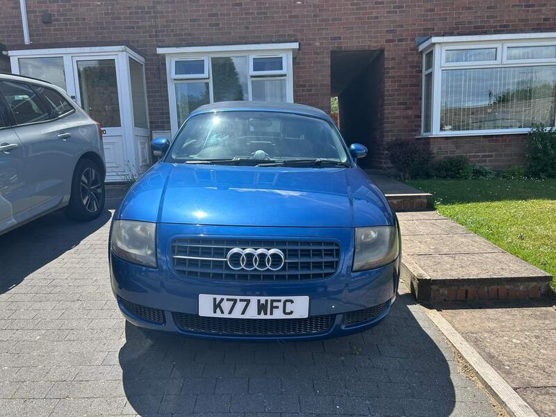
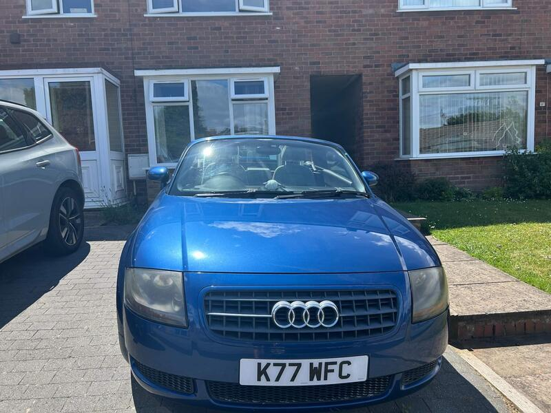
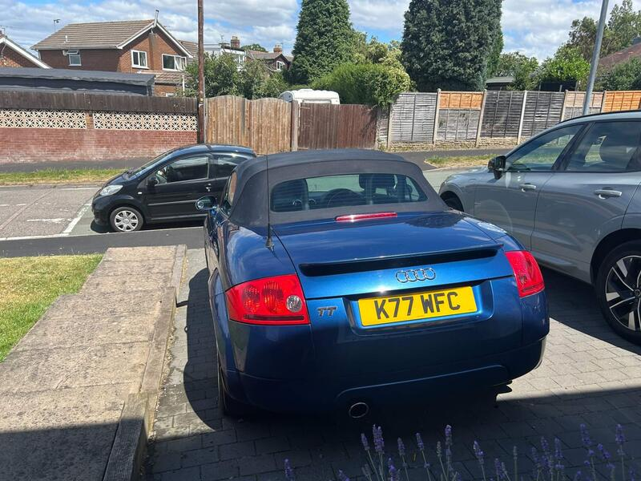

Seller photos from the AutoTrader ad.
Audi TT Roadster 1.8T
The lowest-mileage TT, with the classic weak spots already addressed. Excellent paperwork story.
Key facts
| Price | £2,950 |
|---|---|
| Year | 2004 |
| Miles | 47,737 |
| Model | Audi TT Roadster 1.8T |
| Colour | Blue |
| Registration | 2004 (54 reg) |
| Owners | 4 owners |
| Service history | Not stated |
| MOT | Not stated |
| Seller | Private |
| Location | Walsall |
| From GU7 | 114 mi (AutoTrader) |
| Checked | 13 Oct 2026 |
Why buy it
- Only 47.7k miles; timing belt, water pump, springs, shocks and arms all done (ad)
- Roof hydraulic oil replaced, drain tubes replaced, dry inside (ad)
Things to check
114 mi away
Check the dash pod and coil packs
- Audi TT Roadster (8N/8J) weak spots
Mostly OK, but Mk2 rear steel section and the metalwork around the hood can corrode; blocked hood drains soak carpets. Mk1: timing belt/water pump, coilpacks, failing dash pod (~£200). Mk2 2.0 TFSI: cam follower (2006-08), oil use and chain tensioner (2009-11); Haldex service on quattros.
Seller says (extract)
“Car in very good condition Roof fully works Recent work within the last 2 years Wheels refurbished Water pump and timing belt changed Rear brake discs and pads replaced Front and rear springs and shock replaced (original ride height. Rear drain tubes replaced Front bottom suspension arms changed Roof hydraulic oil just replaced. All electrics and microswitches' work No water leaks in vehicle all perfectly dry Private number plate not included in sale…”